Състезания
2021
Всичко започна със седмицата на програмирането и организираното от училището състезание „Робо Сумо“. Още от тогава станахме отбор. Първоначално отборът беше само от момчета. Решихме да наследим името и логото на отбор състезавал се преди нас. Повече за историята на отбор Robo Pro преди ние да го наследим може да прочетете ТУК.


Събирахме се веднъж в седмицата, а когато не бяхме присъствено си правехме онлайн събирания. В началото на всяко занятие по роботика ние си разпределяме задачите поравно. За щастие нашият екип се сработваше много добре и всеки върши работата си бързо и безпроблемно, но когато някой от екипа отсъстваше, друг поемаше задачата му, за да не спира работата.
 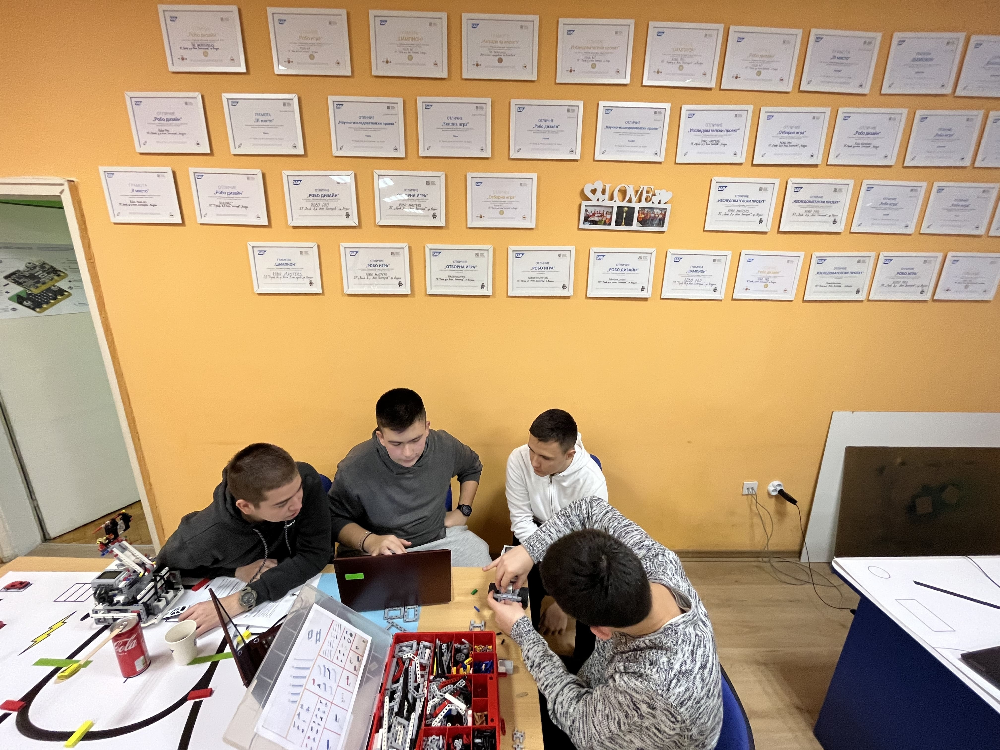
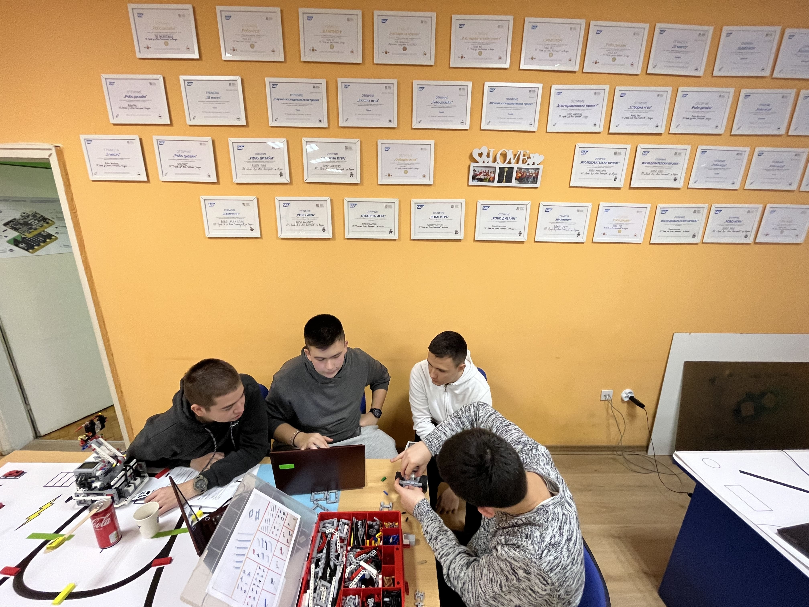


Състезанието беше онлайн и след много труд и време, предадохме финалното задание. Няколко дни по-късно, разбрахме радостната новина, че сме спечелили първо място и бяхме много щастливи, че трудът ни е отплатен.
2022
Това е нашата втора година в състезанието по Роботика и смятаме да защитим нашата титла като победители в състезанието. Ние сме изключително щастливи да участваме в състезанието и да се съревноваваме с останалите отбори по Роботика.

 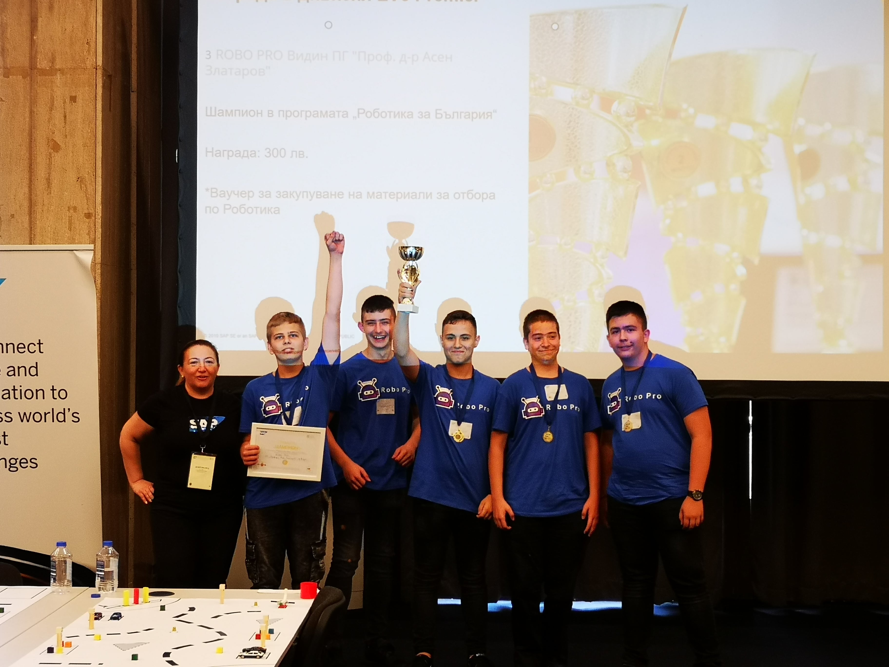
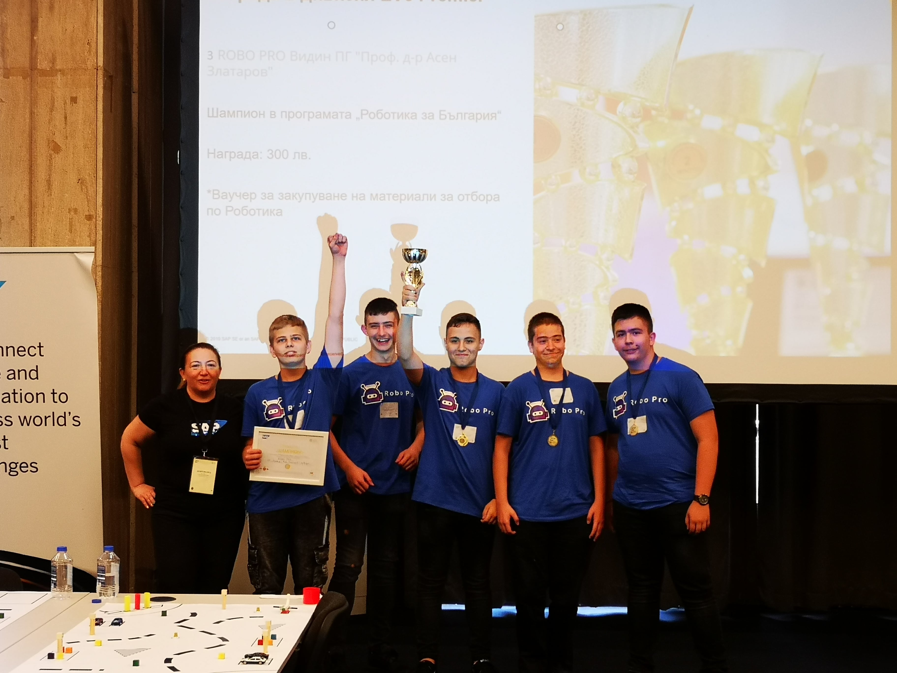
Заедно с клубът по роботика пътувахме до София. Там посетихме Техно Маджик ленд, Музея на илюзиите, Фирма за електроника ФЕСТО, и суперкомпютърът. Нашето посещение в Техно Маджик ленд ни удиви с експерименти които ни показаха. Следващите посещения в музея на илюзиите, Фирма за електроника ФЕСТО и посещението на супер компютър бяха невероятни и научихме нови неща които в бъдеще ще ни помогнат.
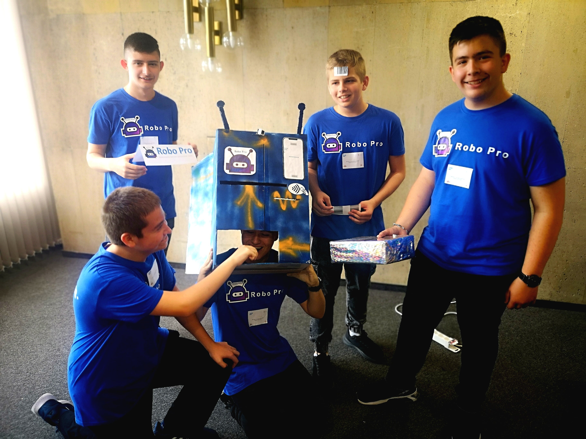
Тази година състезанието беше присъствено и беше уникално преживяване. Показахме уменията си и отново за втора поредна година спечелихме първото място.
2023
Това е нашата трета и последна година, в която можем да се състезаваме с Lego Mindstorms EV3 в състезанието по Роботика и смятаме да защитим нашата титла като победители. Ние сме изключително щастливи да участваме в състезанието и да се съревноваваме с останалите отбори по Роботика.


Това е нашата трета и последна година, в която можем да се състезаваме с Lego Mindstorms EV3 в състезанието по Роботика и смятаме да защитим нашата титла като победители. Ние сме изключително щастливи да участваме в състезанието и да се съревноваваме с останалите отбори по Роботика.
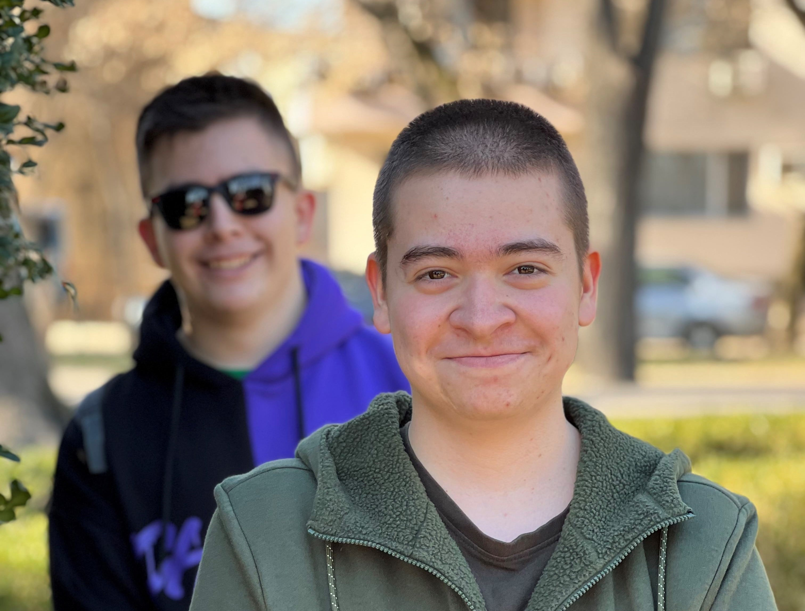

На 21 февруари след като посетихме по учебно занятие на драматичен театър "Владимир Трендафилов" по постановка на спектакъла "Езоп" излезнахме целия отбор не само да си направим екипна снимка, а да се порадваме на хубавия слънчев ден. Поразходихме се из дунавската градина и намерихме хубави места където да се снимаме отборно или индивидуално.
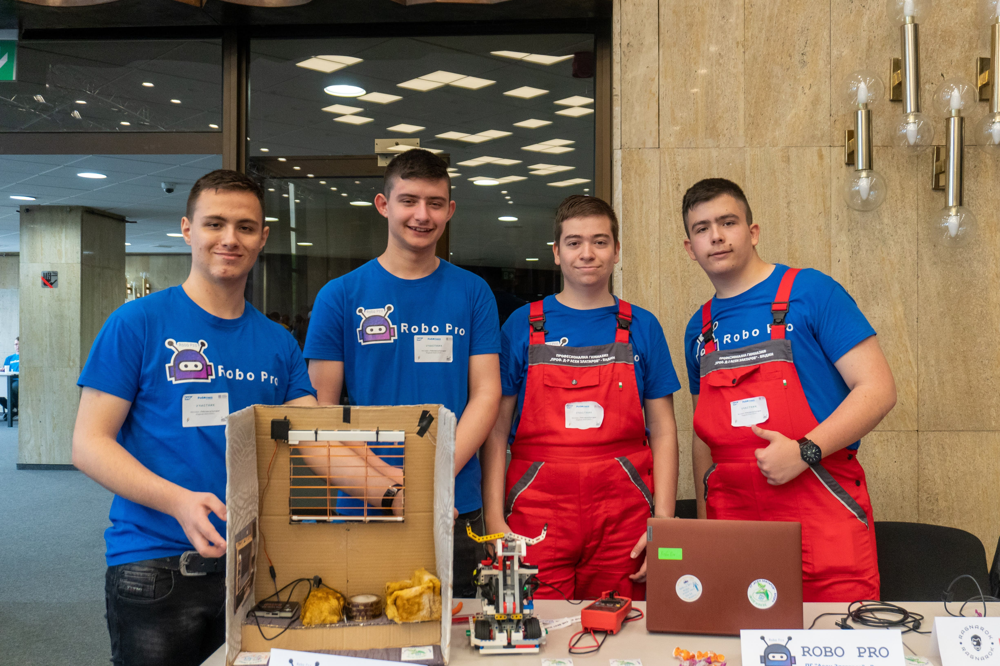 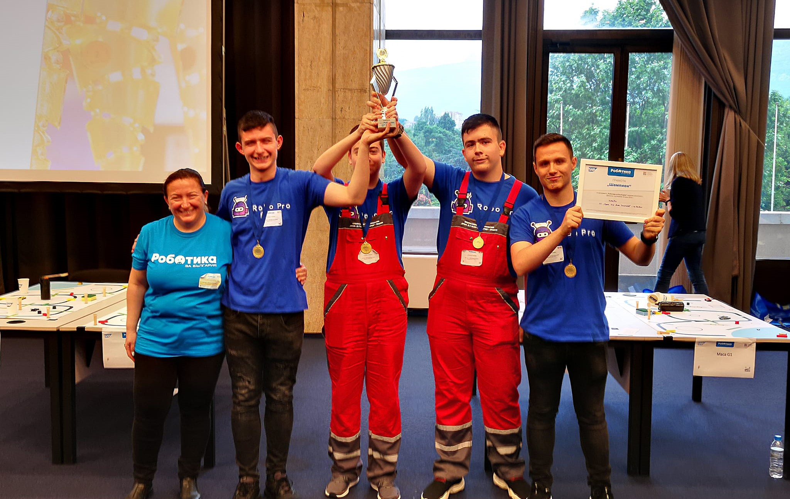 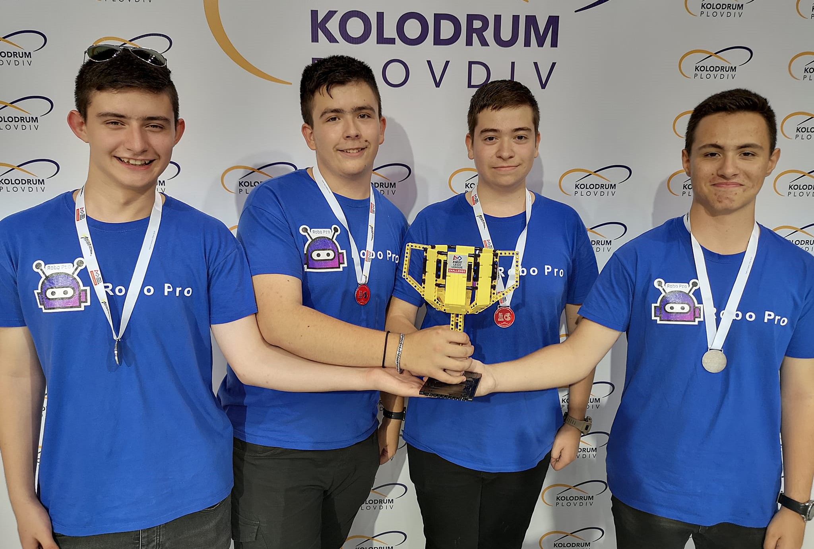На 3 юни се проведе състезанието "Роботика за България". Като успяхме да вземем 1-вото място във всички категории, което ни донесе и победата за трета поредна година. На 8 юли се проведе международно състезание по роботика в Пловдив "FLL". Макар и за малкото време, което имахме да се подготвим и след ожесточените битки на финалите, ние успяхме да завоюваме победата.
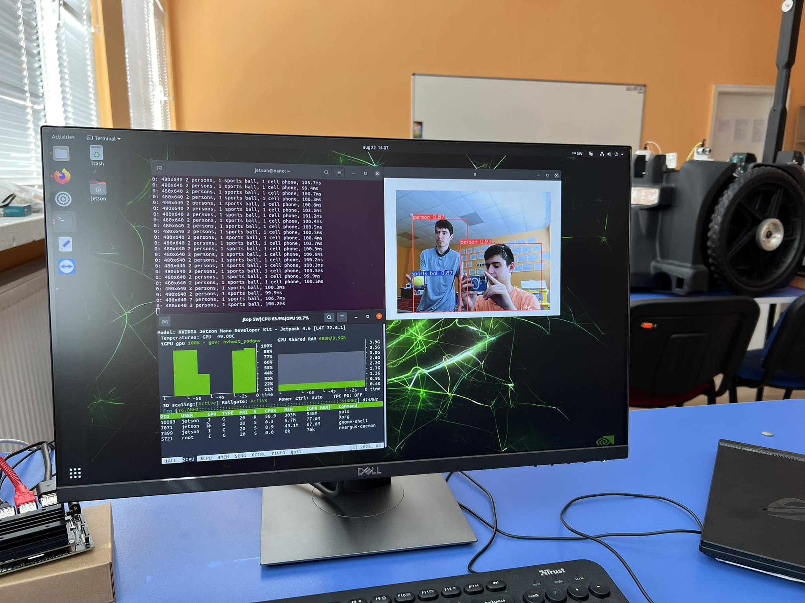 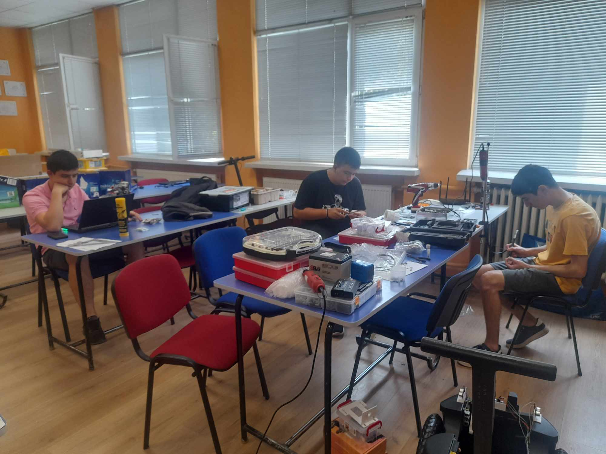 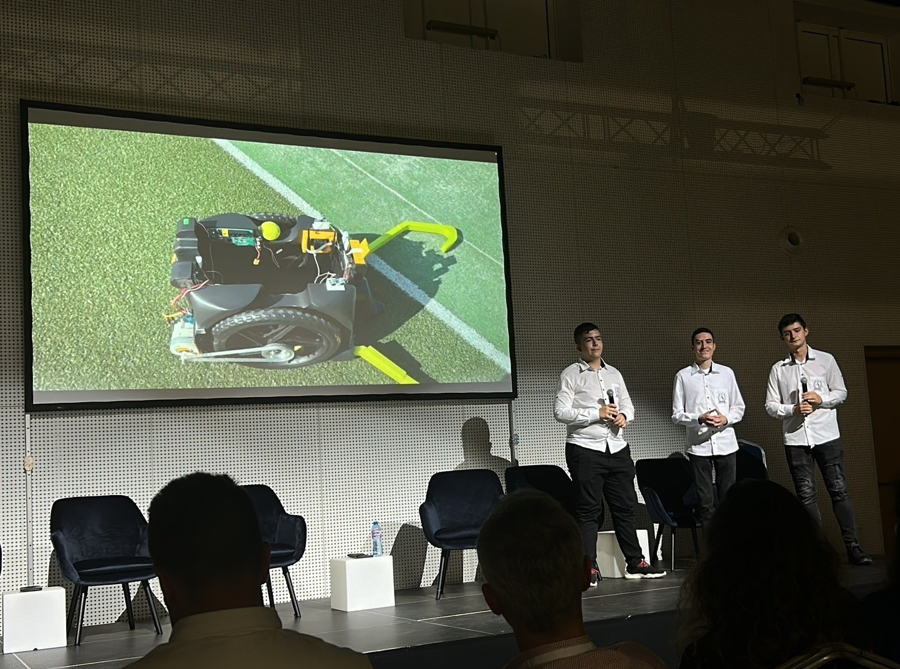 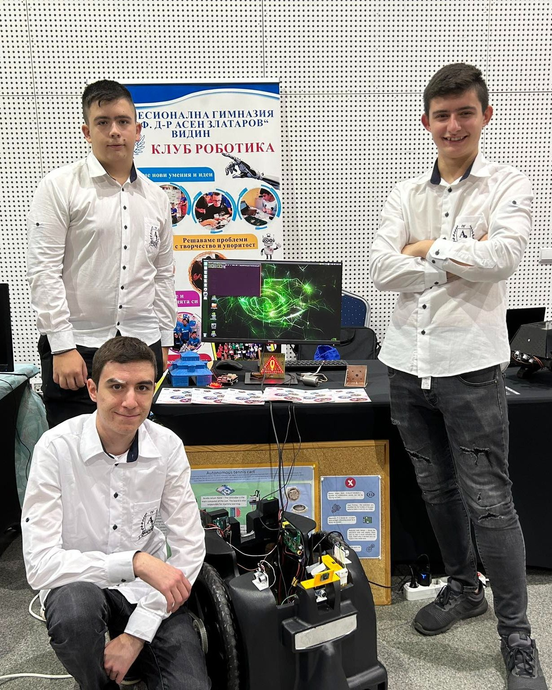След нашите победи в състезанието, двама от членовете на нашия отбор и младият ни ментор Кристиян Георгиев участваха във втория сезон на инкубатора по роботика и автоматизация. Те се подготвяха паралелно за участието си в инкубатора по време на състезанието "Роботика за България", както и след него. Цяло лято оставаха в училище, за да се подготвят за него. Техният проект е "Автоматизирана количка за събиране на тенис топки". След дълга работа, с множество предизвикателства и успехи, нашите шампиони постигнаха почетното второ място!
2024
Настъпи нашето време да преминем в Arduino дивизията. Това е четвъртата година, в която участваме в националното състезание "Роботика за България", както и нашият първи сезон, в който ще се състезаваме с Arduino робот. Този път състезанието ще бъде по-трудно, защото сме в нова дивизия с нови отбори, но това няма да ни спре от победата, и смятаме да защитим нашата титла като шампиони на България.